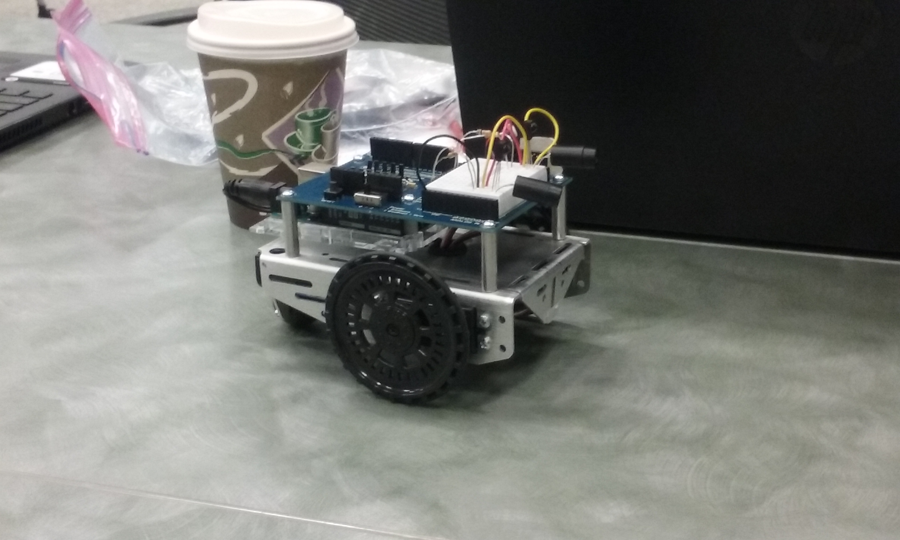
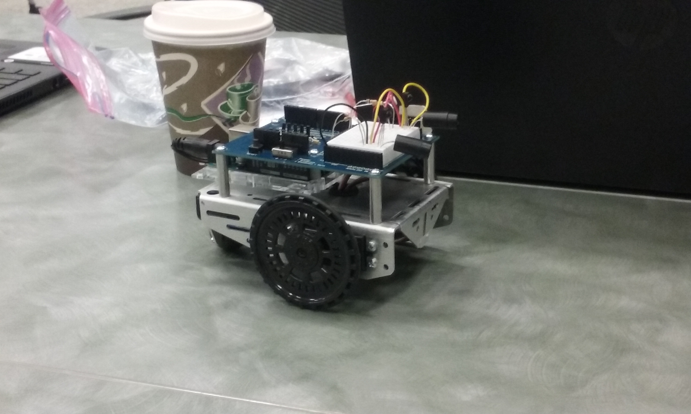

^will fix that later :p
Hello, my name is Lana Ngo and I am 15 years old. I currently attend Piedmont Hills High School as a junior. I am also a board member of my school's ARK (Acts of Random Kindness) club. I like to spend time looking at memes and watching shows all day. please don't read this all it's very cringe
I like to volunteer, especially with my school's UNICEF and Key club, in my spare time. I am also a big dog and cat enthusiast.
[dislikes?? other stuff about me here]
I dislike spiders. a lot
[goals n stuff here]
I aim to get into somewhere like UC Berkeley, NYU, UC Davis, or UC Irvine. I don't know what I want to major in yet, but I will figure it out soon.
[Girls Who Code stuff]
Summer 2017
[SEAYC]
January 2016
[Key]
August??-May 2019
[Meditation camp stuffs]
please do not judge me too hard on this thx <33
[Random stuffs]
Based on what you've learned so far, what are some similarities between Python and Scratch? What are some differences?
Similarly to scratch, python uses variables, loops, and conditionals.
Today, you likely had to spend time debugging your program. How did that feel? What did you like about it? What was hard?
I think that it was fun trying to recreate what I made in scratch with python, as well as with a partner. I like that it was something that I was more familiar with, so it wasn't too hard to draw shapes in python. We tried to make the turtle move every time a shape was drawn, but we weren't able to figure that out, unfortunately.
Today, you learned about data structures. Describe what a list is and how it is useful in your own words. A list is a set of elements that can be used to select single elements. Lists can also be used to write programs that perform specific operations.
You worked with a few different partners and in a few different groups today. Which group worked best together? Why?
I like the group I worked with today (Kasy and Xiaotong (and Emily, but she wasn't here today)). Whenever we were assigned an exercise and only one of us got it, that person would try to help everyone else understood how they got their solution.
What did you like the most in python?
I like how you can make so much stuff in python like text games or even images like the Obamicon one.
We talked a lot about robots and their ethics today. How did your idea of robotics change? What makes you excited about the future of robotics? Nervous?
Some people's definition of a robot was more specific than mine, so that made me reconsider how I define robots. I'm excited because robotics can really help us out in the future and make daily life activities easier for humans to carry out. What makes me nervous is the possibility that there will be a higher rate of unemployment due to robotics.
You worked on circuits in groups, and will be working in groups for the rest of the week. What worked well? What could you do better next time?
I think that having group members who've had previous experience with circuits helped a lot. Next time I will try to prepare in advance and take some time to learn about the basics of circuits.
Instagram Twitter Facebook